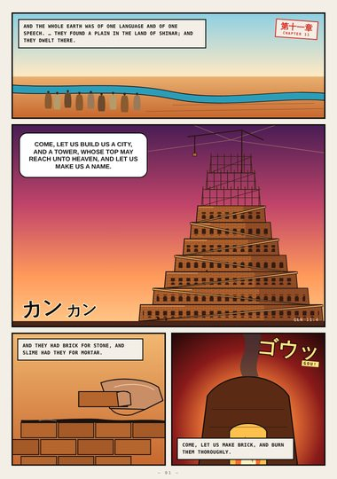
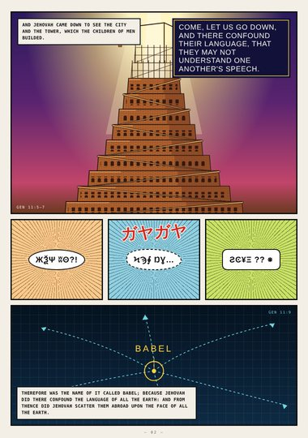
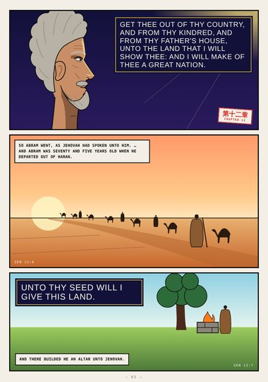
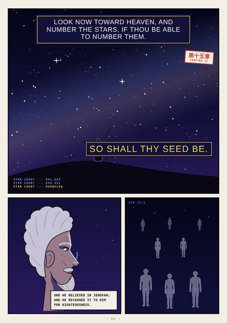
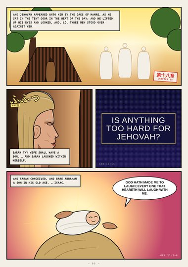
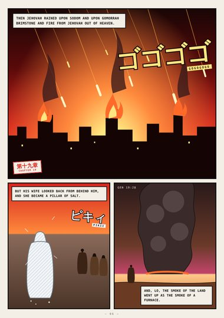
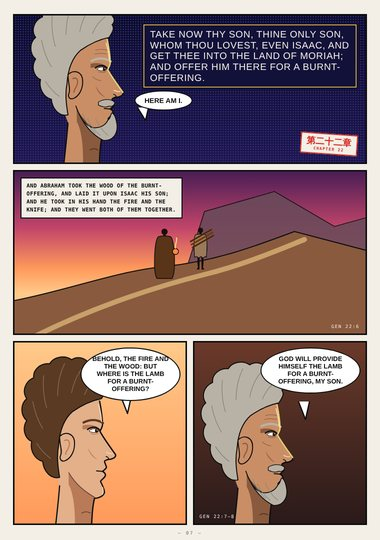
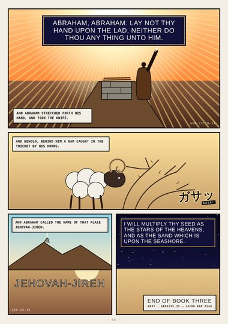

Genesis · Book Three · Genesis 11–22
The Promise
The tower of Babel, the call of Abram, Sodom and Gomorrah, and the mountain of Moriah.
Start reading ›Pages
 CoverCoverGenesis 11–22
CoverCoverGenesis 11–22
Page 1Brick for StoneGenesis 11:1–4
Page 2BabelGenesis 11:5–9
Page 3The Call of AbramGenesis 12:1–7
Page 4Number the StarsGenesis 15:5–6
Page 5Sarah LaughedGenesis 18 – 21
Page 6Fire from HeavenGenesis 19:24–28
Page 7The Way to MoriahGenesis 22:1–8
Page 8Jehovah-jirehGenesis 22:9–18